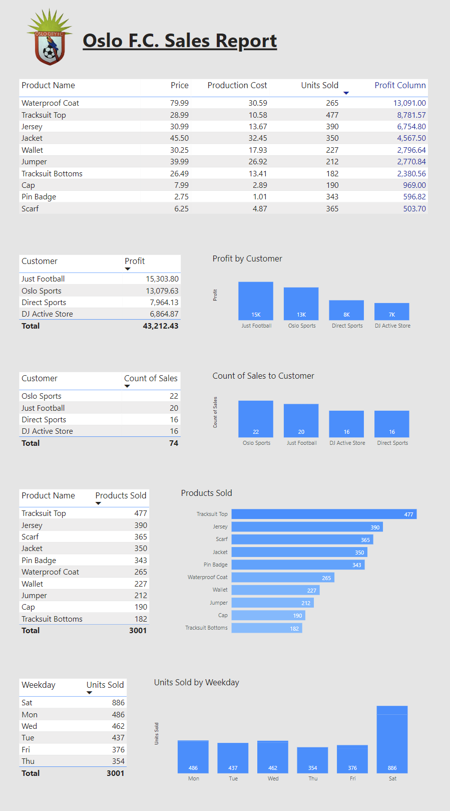
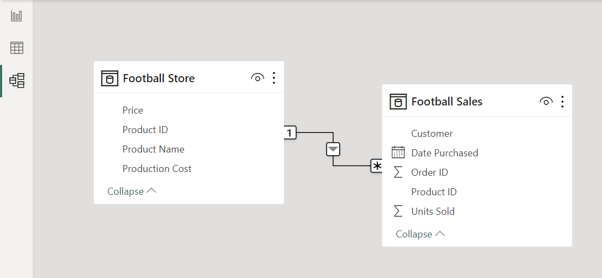
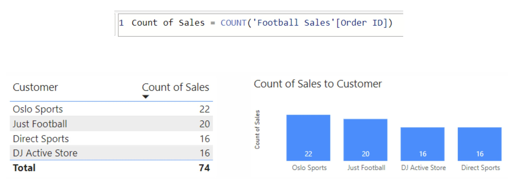
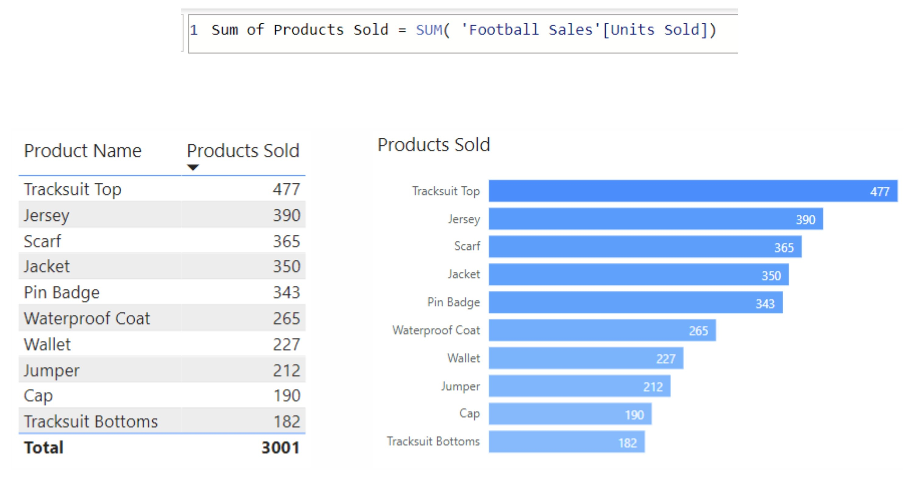
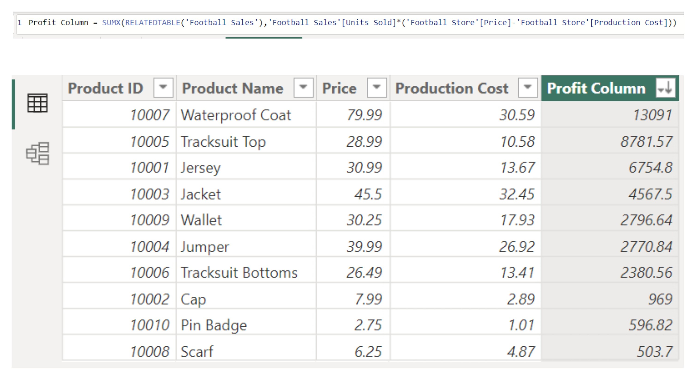
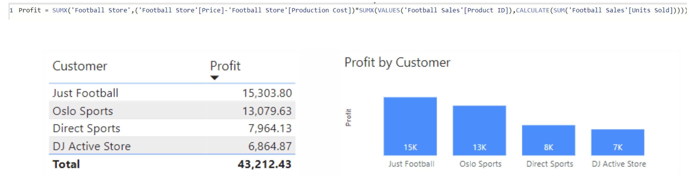
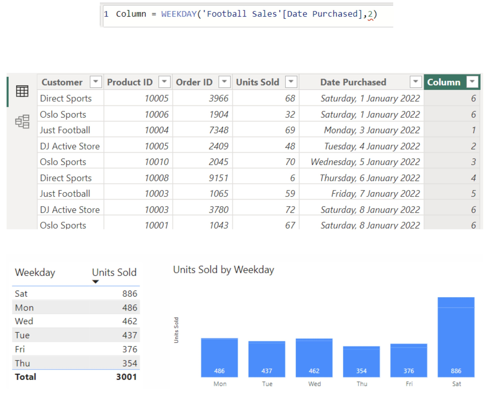
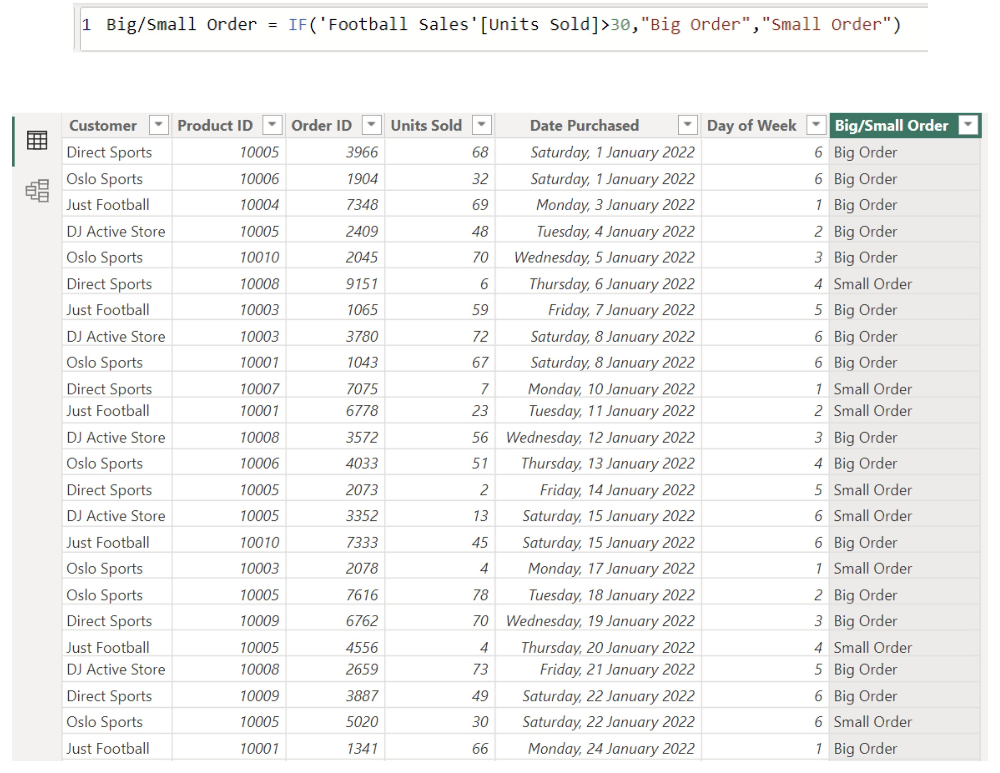

Project Overview
For this project, I used Power BI's Data Analysis Expressions (DAX) language to build a dynamic sales report for a fictional football team, Oslo FC. The report analyses merchandise sales across four retail sports stores that stock official Oslo FC products.
The underlying data structure consists of two tables: a Store Items table containing item prices and production costs, and a Customer Sales table tracking transaction logs and quantities sold across stores.

Key Findings & Sales Analysis
- Top Profit Generator: The Waterproof Coat produced the highest total profit by a substantial margin at 13,091.00, despite selling fewer units (265) than lower-margin items due to its high profit margin per unit.
- Best Selling Merchandise: The Tracksuit Top led overall volume with 477 units sold (generating 8,781.57 in profit), followed by Jerseys (390 units) and Scarves (365 units). Overall, 3,001 total units were sold across all items.
- Key Retail Customer: Just Football generated the highest profit among retail partners at 15,303.80 across 20 sales orders. While Oslo Sports recorded slightly more individual orders (22 count of sales), they placed second in total profit (13,079.63). Total retail profit reached 43,212.43.
- Peak Purchasing Days: Saturday dominated weekly sales volume with 886 units sold—nearly double any weekday volume (Monday recorded 486 units). Matchday weekends represent the primary revenue driver for Oslo FC merchandise.
DAX Calculations & Data Modelling
1. Relational Data Join: Uploaded the dataset to Power BI, which automatically recognised the one-to-many relationship between the two tables via the mutual Product ID column.

2. Count of Sales by Store: Created a Count of Sales column using the COUNT function to evaluate order frequency across retail customers.

3. Units & Products Sold: Combined data from the Football Store and Football Sales tables using the SUM function to aggregate total units sold per product.

4. Row-by-Row Profit Calculation (SUMX & RELATEDTABLE): A simple scalar subtraction multiplied by total units sold returns incorrect results across rows. To evaluate row-level profitability accurately, I used SUMX alongside RELATEDTABLE to calculate (Price - Production Cost) * Units Sold for each individual product line item.

5. Customer Profitability: Utilised SUMX to aggregate total profit generated per retail store customer.

6. Day of Week Sales Pattern: Added a Weekday column using the WEEKDAY function to convert purchase dates into numerical day representations, identifying Saturday as the peak sales period.

7. Order Categorisation (Conditional Logic): Applied an IF function to classify transactions into Big Order (over 30 units) or Small Order (30 units or fewer) for order size profiling.
